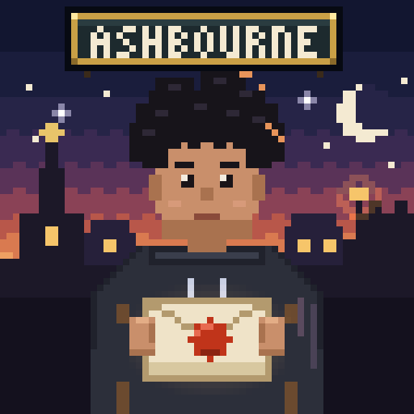
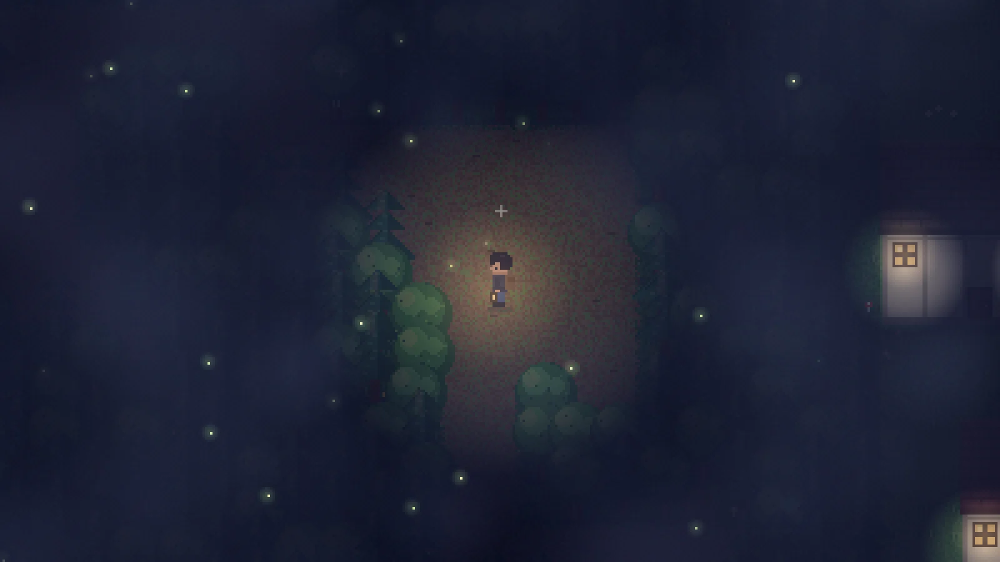
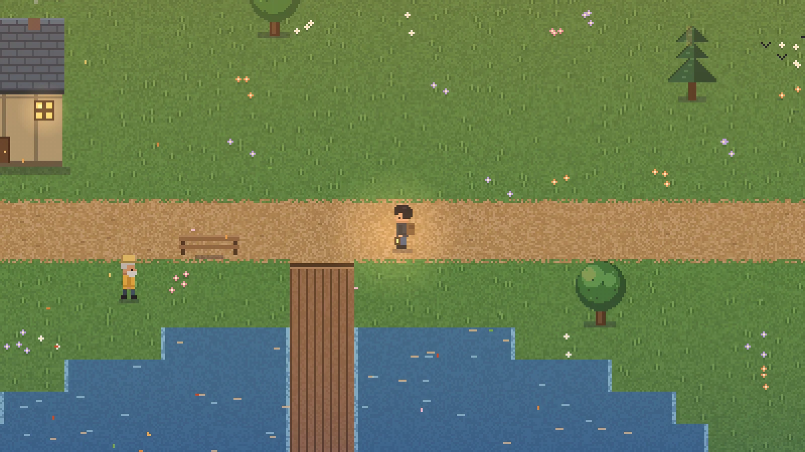
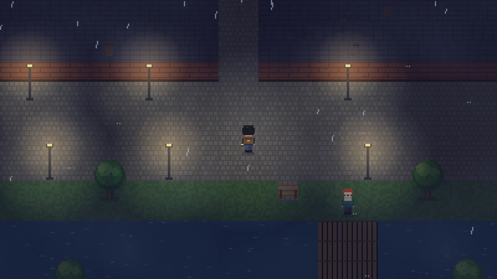
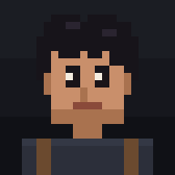
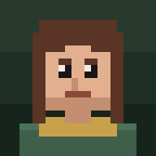

14 chapters, 4 parts
It opens on the night of the fire. A mystery twenty years in the making, told through letters, clues and the people who were there.

A pixel mystery in fourteen chapters
Twenty years ago, your father vanished.
Three days ago, he wrote to you.
Free · No ads · Computer, tablet & phone · Saves automatically
In the village of Ashbourne, the railway office burned down in the night. A woman named Mara Voss died inside.
That same night, your father Elias disappeared — so everyone believed he started the fire and ran. You were six. You grew up believing it too.
Now a letter has arrived in his handwriting, dated three days ago. So you take the train to Ashbourne, where everybody remembers that night differently… and somebody has spent twenty years making sure the truth stays buried.
Who really started the fire? And where is your father now?
Noah, You won’t remember my handwriting. I’m sorry for that, and for a great deal more. You’re old enough now to know what happened. I did not set that fire. I left because staying would have put you in danger. Take the train to Ashbourne. Find the bookseller near the station. He’ll know you by my handwriting. Don’t tell anyone else why you’ve come. Not until you know who to trust. — Dad
“Some letters take twenty years to arrive.”
It opens on the night of the fire. A mystery twenty years in the making, told through letters, clues and the people who were there.
Collect 23 clues and hidden memories. Your journal keeps track of the big questions.
Townsfolk go about their day and head home at night. Knock on their doors.
A real day–night cycle with dawn light, rain showers, forest fog and fireflies.
Archers, goblins, shadow stalkers, stone golems and crystal wisps. Fight back with a sword, bow, axe and shield.
Win over Scout, the stray by the bridge, and he’ll fight at your side.
From finishing the story to bonking every single townsperson.
In your browser on any computer or phone. Free, no ads, works offline.



Everyone remembers that night differently. Someone is lying.

22, from the city. Grew up believing his father was a criminal.
Vanished twenty years ago. Three days ago, he wrote to you.
Knew your father’s handwriting at a glance. Won’t say more — yet.

Keeps Ashbourne’s memory in cardboard boxes.
Your father’s oldest friend. Hasn’t smiled in twenty years.
Knows everyone who comes and goes at the station.
Hears every rumour first. Has lost her cat. Again.
Walks Ashwood forest at night. Hasn’t forgiven anyone.
Postmarks don’t lie. People do.
Trades ember shards for steel. Hits harder than you.
Her bread could raise the dead. Almost.
Fishes by the river. Believes in the ghost light.
It begins on the night of the fire, 14 June 2006.
A bookseller who won’t talk, a word carved into an old fence, and a forest nobody enters after dark.
Dawn on the old platform. He promised he would be there.
One clue. One name. And the last person you’d expect.
The night train. One last stop.
Play the whole story free, right now, in your browser.
▶ Play The LetterOn a phone? Turn it sideways, and add it to your home screen to play full screen.